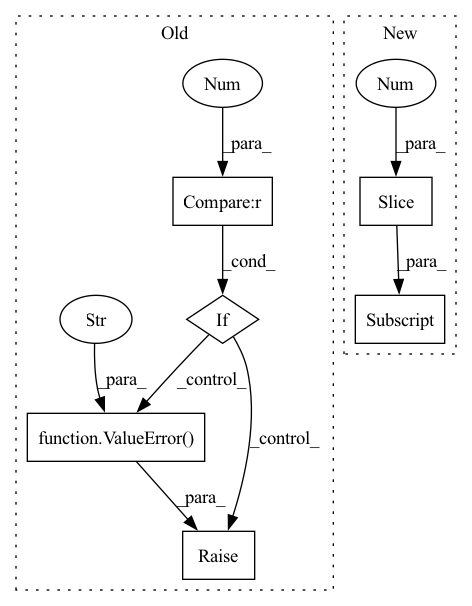

Pattern ID :26099
Before Change
if img.ndim == 2:
h, w = img.shape
elif img.ndim == 3 :
h, w, c = img.shape
else:
raise ValueError(f"Image ndim should be 2 or 3, but got {img.ndim}" )
h_space = np.arange(0, h - crop_size + 1, step)
if h - (h_space[-1] + crop_size) > thresh_size:
h_space = np.append(h_space, h - crop_size)After Change
img = cv2.imread(path, cv2.IMREAD_UNCHANGED)
h, w = img.shape[0:2]
h_space = np.arange(0, h - crop_size + 1, step)
if h - (h_space[-1] + crop_size) > thresh_size:
h_space = np.append(h_space, h - crop_size)
w_space = np.arange(0, w - crop_size + 1, step)In pattern: SUPERPATTERN
Frequency: 3
Non-data size: 6
Instances Fragment ID: 78693296
Project Name: xinntao/real-esrgan
Commit Name: 8675208bc9524afc694162e8a295fffe81eb5bad
Time: 2021-09-07
Author: wxt1994@126.com
File Name: scripts/extract_subimages.py
M Class Name: AnonimousClass
N Class Name: AnonimousClass
M Method Name: worker(2)
N Method Name: worker(2)
M Parent Class:
N Parent Class:
M File Name: scripts/extract_subimages.py
N File Name: scripts/extract_subimages.py
M Start Line: 107
M End Line: 116
N Start Line: 107
N End Line: 109
Before Change
n_uniques = hyper_df.nunique()
sub_dfs = []
sub_scores = []
if dimensions > 4 :
raise ValueError("plot not implemented for more than 4 hyperparameters" )
elif dimensions == 4:
fig, axs = plt.subplots(n_uniques[-2], n_uniques[-1], subplot_kw={"projection": "3d"})
unique_x = hyper_df[hyper_df.columns[-2]].unique()
unique_y = hyper_df[hyper_df.columns[-1]].unique()After Change
if n_params > 4:
warnings.warn("plot not implemented for more than 4 hyperparameters. Plotting for first 4")
param_cols = param_cols[:4]
n_uniques = n_uniques[:4]
if n_params > 3:
fig, axs = plt.subplots(n_uniques[-2], n_uniques[-1], subplot_kw={"projection": "3d"})
unique_x = cv_results_[param_cols[-2]].unique()
unique_y = cv_results_[param_cols[-1]].unique() Fragment ID: 78693300
Project Name: jameschapman19/cca_zoo
Commit Name: 4e44f20e5f5632710a52316bf27e6320ac1c3abe
Time: 2021-09-24
Author: james.chapman.19@ucl.ac.uk
File Name: cca_zoo/utils/plotting.py
M Class Name: AnonimousClass
N Class Name: AnonimousClass
M Method Name: cv_plot(1)
N Method Name: cv_plot(1)
M Parent Class:
N Parent Class:
M File Name: cca_zoo/utils/plotting.py
N File Name: cca_zoo/utils/plotting.py
M Start Line: 19
M End Line: 63
N Start Line: 16
N End Line: 58
Before Change
// Input validation
additional_columns = set(kwargs.keys())
forbidden = additional_columns.intersection(TRIPLES_DF_COLUMNS)
if len(forbidden) > 0 :
raise ValueError(
f"The key-words for additional arguments must not be in {TRIPLES_DF_COLUMNS}, but {forbidden} were "
f"used." ,
)
// convert to numpy
tensor = tensor.cpu().numpy()
data = dict(zip(["head_id", "relation_id", "tail_id"], tensor.T))After Change
)
// Re-order columns
columns = list(TRIPLES_DF_COLUMNS) + old_col[3:]
return data.loc[:, columns]
def new_with_restriction(
self, Fragment ID: 78693301
Project Name: pykeen/pykeen
Commit Name: a2f9ee81f1899e695483c69983cc8159524cbe01
Time: 2021-01-21
Author: berrendorf@dbs.ifi.lmu.de
File Name: src/pykeen/triples/triples_factory.py
M Class Name: TriplesFactory
N Class Name: TriplesFactory
M Method Name: tensor_to_df(2)
N Method Name: tensor_to_df(2)
M Parent Class: CoreTriplesFactory
N Parent Class:
M File Name: src/pykeen/triples/triples_factory.py
N File Name: src/pykeen/triples/triples_factory.py
M Start Line: 661
M End Line: 693
N Start Line: 941
N End Line: 958